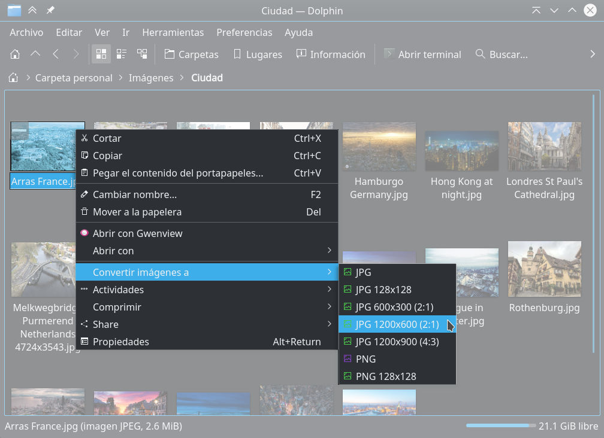

Crear menús de servicios en Dolphin
Cómo crear menús de servicios o acciones en Dolphin que se van a desplegar en el menú contexual.
Las acciones de Dolphin, también llamadas "menús de servicios", sirven para ejecutar un programa enviando como parámetros los archivos seleccionados.
Como ejemplo, es un trabajo frecuente preparar las imágenes para un sitio web; porque consume varios minutos abrir cada imagen, recortar, cambiar el tamaño y exportar a JPEG o PNG.
Vamos a hacer esa rutina más rápido, simplemente dando clic con el botón derecho sobre las imágenes para convertirlas.

Instale ImageMagick
Para hacer la conversión de las imágenes usaremos ImageMagick. En Fedora Linux se instala como root con...
# dnf install ImageMagick
Elabore los Bash Scripts
Como se trata de programas propios, no del sistema, conviene tenerlos en un bin personal...
$ mkdir ~/bin
Cree un script para convertir las imágenes a PNG...
$ kwrite ~/bin/imagen-png.sh
Con este contenido...
1 2 3 4 5 6 7 8 9 | |
Cree un script para convertir las imágenes a JPEG...
$ kwrite ~/bin/imagen-jpg.sh
Con este contenido...
1 2 3 4 5 6 7 8 9 | |
Hágalos ejecutables...
$ chmod +x ~/bin/imagen-png.sh
$ chmod +x ~/bin/imagen-jpg.sh
Pruebe desde una terminal que funcionen. Son capaces de recibir muchos archivos para convertir. Por ejemplo...
$ cd ~/Descargas
$ ~/bin/imagen-jpg.sh logotipo.png
$ ~/bin/imagen-jpg.sh pagina-1.png pagina-2.png pagina-3.png
$ ~/bin/imagen-png.sh *.jpg
Crear acciones para Dolphin en KDE 5
Averigüe dónde deben de estar los archivos de las acciones; para ello, en KDE 5, ejecute...
$ kf5-config --path services
/home/USUARIO/.local/share/kservices5/:/usr/share/kservices5/
Por defecto no existe el directorio, hay que crearlo...
$ mkdir -p ~/.local/share/kservices5
Nos cambiamos a ese directorio...
$ cd ~/.local/share/kservices5
Cree un archivo desktop. En este ejemplo, vamos a definir acciones para convertir archivos...
$ kwrite ConvertImages.desktop
Con este contenido...
[Desktop Entry]
Type=Service
ServiceTypes=KonqPopupMenu/Plugin
X-KDE-ServiceTypes=KonqPopupMenu/Plugin
MimeType=image/*;
Actions=ConvertToPNG;ConvertToJPG;
X-KDE-Submenu=Convert images to
X-KDE-Submenu[es]=Convertir imágenes a
Encoding=UTF-8
[Desktop Action ConvertToPNG]
Name=Convert to PNG
Icon=image-png
Exec=~/bin/imagen-png.sh %F
[Desktop Action ConvertToJPG]
Name=Convert to JPG
Icon=image-jpeg
Exec=~/bin/imagen-jpg.sh %F
Reinicie Dolphin y pruebe.
Algunas de las opciones que tiene ese archivo son:
- Un
Desktop Entryy uno o variosDesktop Action. - En
Actionsse declaran cada acción, que deben aparacer más adelante comoDesktop Action. - En
MimeTypese filtra que la acción es para cualquier archivo de imagen. - Con
X-KDE-Submenuse define el nombre a usar en el menú contextual. - Las acciones, que forman el sub-menú, tienen en
Namesu nombre, enIconel icono a mostrar y la orden a ejecutar enExec. - En
Execestá el programa y sus parámetros. En este caso%Fes para pasar muchos archivos con sus rutas completas.
Lea la documentación de ImageMagick para crear sus propios scripts. Por ejemplo, elaborar imágenes previas (128x128) o fondos de escritorio (1920x1080).